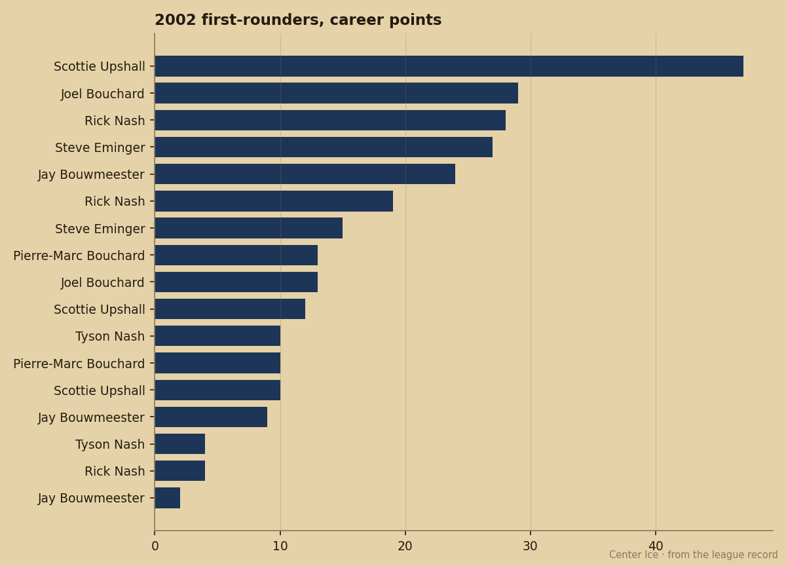

CBJ
CBJ NJ
NJ VAN
VANFuture Files: New York's 99 Is the Highest Number in the Book and It Belongs to a Goalie
Rick DiPietro carries a potential figure no other under-23 player matches, and the team around him has 34 points.
 Pete LarocqueScouting editor · The Prospect File
Pete LarocqueScouting editor · The Prospect File
Rick DiPietro
 Rick DiPietro80 carries a 99 potential figure, the highest among all under-23 players in the league, and the
Rick DiPietro80 carries a 99 potential figure, the highest among all under-23 players in the league, and the  New York Islanders have 34 points.
New York Islanders have 34 points.
The Islanders are 14-12-2 in the Atlantic, one point behind the Rangers and four behind New Jersey. They are not contenders. They are not rebuilding. They sit in the middle, and the middle is where a 99-potential piece either gets built into a foundation or gets packaged because the team around him is not going anywhere.
The number no one else has
Potential is the Bureau's measure of how much a player is likely to develop from where he stands. A 99 is the top of the scale. It means the Book sees no meaningful ceiling between DiPietro's current grade and the top of the league. His overall is 84 today, which is his base of 79 plus 4 on the Development Index. He is above his base right now, and the 99 says the base is not where he ends up.
The table below puts him next to the other top young goalies in the Book's under-23 pool:
| Player | Team | Age | Overall | Potential | Form | GP | MPG |
|---|---|---|---|---|---|---|---|
| Rick DiPietro | NYI | 23 | 84 | 99 | +4 | 23 | 54.0 |
 Pascal Leclaire86 Pascal Leclaire86 | CBJ | 22 | 88 | 93 | +4 | 12 | 58.9 |
| Ari Ahonen85 | NJ | 23 | 86 | 93 | +4 | 6 | 39.3 |
| Alexander Auld75 | VAN | 23 | 81 | 94 | +2 | 8 | 47.4 |
Pascal Leclaire has the higher overall, 88 to 84, and he is a year younger. But the potential gap is what separates them: 99 to 93. The Book says DiPietro has more room to grow. He has also played nearly double Leclaire's games, 23 to 12, which means the 99 is attached to a sample, not a projection.
The 2002 class as a floor
The 2002 first-rounder class and where its members stand in points this season.

 Rick Nash81 leads at 28 in 31 games for
Rick Nash81 leads at 28 in 31 games for  Toronto Maple Leafs. Scottie Upshall77 has 12 in 28. Pierre-Marc Bouchard73, the 8th pick, has 13 in 32 for
Toronto Maple Leafs. Scottie Upshall77 has 12 in 28. Pierre-Marc Bouchard73, the 8th pick, has 13 in 32 for  Minnesota Wild.
Minnesota Wild.  Jay Bouwmeester78, the 3rd pick, has 9 in 30 for
Jay Bouwmeester78, the 3rd pick, has 9 in 30 for  Florida Panthers. These are solid numbers for young men on teams that are not winning. But they are production numbers. They tell you what a player has done. The 99 on DiPietro is a different kind of number. It tells you what the Bureau expects a player to become.
Florida Panthers. These are solid numbers for young men on teams that are not winning. But they are production numbers. They tell you what a player has done. The 99 on DiPietro is a different kind of number. It tells you what the Bureau expects a player to become.
The other piece in the room
Kristian Timander71, the 2nd overall pick from last summer, leads the 2004 draft class with 17 points in 24 games. He is 20 years old, a left wing, and he is getting 17.1 minutes a night. Most of the 2004 class is still scratched or unsigned. Timander is dressed and scoring. The class is 6 months in and he is the one actually playing.
So the young core in New York is a 23-year-old goalie with the league's highest potential figure and a 20-year-old winger who leads last year's draft class in points. The team has 34 points and a record that keeps it in the middle of the Atlantic. The 99 is the number that should be making other rooms uncomfortable, because it says the piece is going to keep getting better whether the team wins or not.
The Book does not assign a 99 often. It is not a grade. It is a statement about the distance between where a player is and where the Bureau sees him landing. DiPietro is the only under-23 player in the league who carries it.